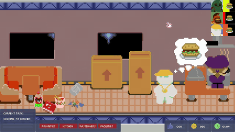

Space Liner 77

A Cozy Chaos Spaceship Simulator (In Development)
You are a slightly overwhelmed spaceship captain transporting autonomous, quirky passengers between
spaceports. You don't control the passengers—you manage the failing ship systems, cook space fricassee, and
desperately try to prevent systemic panic.
Core Features:
- Systemic Chaos: Keep up with broken bunk beds, dirty space-guacamole spots, and failing
power generators.
- Autonomous Moods: Passengers move, eat, and send grumpy social media updates based on
their personal needs.
- Spaceship upgrades: Earn coins from satisfied passengers and improve your ship at the
spaceport. You can also hire services to handle unfinished tasks, like patching those holes a pet martian
possum did on the couch while you were busy putting out a fire in the kitchen.
- No Violence, Pure Frustration: Light corporate satire and wholesome, comedic panic.
"I can’t control everything… but I can keep things from collapsing."
The Arcade Graveyard
Every successful game is built on a foundation of weird prototypes and intense weekend game jams. This is my
digital cabinet of experiments.
Head over to my itch.io profile to play through past builds, including:
- Scaly and the Escalator – Meet the customer capybaras and cats before they boarded Space
Liner 77.
- Fret Cemetery – Home of the original lazy sleeping ghost.
- Don's Curse – Where Naldo first perfected his idle soccer animations.
Expect rough edges, experimental mechanics, and historical game jam pieces that paved the way for my current
work.
About
Rafael Cortez Sanchez (RAFAISKA)
I am a Backend Software Engineer with over 6 years of experience building reliable backend
systems, REST APIs, and distributed applications. By day, I handle billing systems and cloud infrastructure
inside Linux-based environments. By night, I apply those same engineering principles to indie game development.
My academic research focused on Neural Architecture Search, and early in my career, I built complex traffic
control simulations. Because of this background, I don't look at games as just graphics—I see them as real-time
simulation engines.
I build my games using the Godot Engine, leveraging its modular, object-oriented design to
create robust state machines and autonomous agent behaviors. When I am not optimizing data pipelines, I am
figuring out how to stop simulated alien passengers from rioting over space burgers because of a bottleneck in a
spaceship's resource queue.